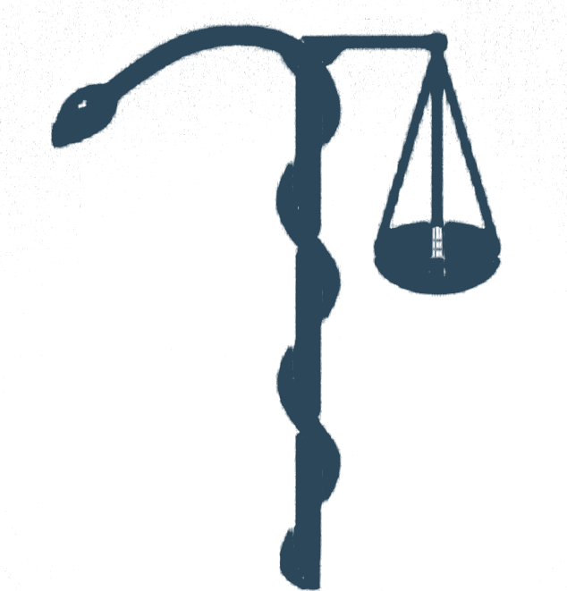
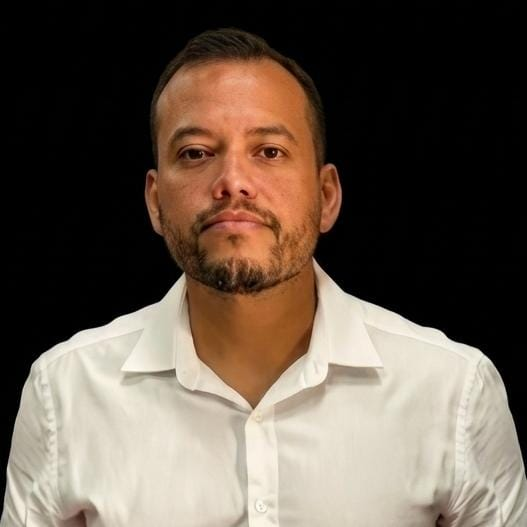

DecisiumConsultoria individual com Paulo Romero Calou de Araújo e Mendonça, Perito Oficial Médico-Legista aprovado em concursos de perícia em dois estados. Duas frentes de atuação, um único especialista.
Quem já esteve nos dois lados — na prova e no laudo — sabe onde cada um pesa. Escolha a consultoria que corresponde ao seu momento.
Apoio técnico direto para quem já está atuando num processo com prova pericial médico-legal — de quem lida com laudos todos os dias e sabe exatamente onde procurar a fragilidade.
Preparação individual em Medicina Legal para concursos de perícia oficial — conduzida por quem já foi aprovado sete vezes, em bancas diferentes, em estados diferentes.
Sem modelo padrão de parecer. Cada análise parte do laudo e das peças que você enviar.
Laudo pericial, peças do processo e o ponto que você quer atacar ou sustentar.
Exame do laudo com o olhar de quem já elaborou centenas — e sabe onde a perícia costuma errar.
Retorno objetivo com pontos fortes e fragilidades identificados no laudo. Parecer técnico formal, se for necessário, é um serviço à parte.
Sem playlist de vídeos genéricos. Cada encontro é ajustado ao que você precisa naquela semana.
Ele já sabe onde você travou — no encontro anterior ou no material que ficou entre as sessões.
Ajustada ao seu ponto atual de preparação, não a uma grade igual pra todo mundo.
Resumos, esquemas e contato direto por WhatsApp — dúvida não espera sete dias pra ser respondida.

Você envia o laudo pericial e o contexto do processo; Paulo Romero analisa tecnicamente e aponta fragilidades, inconsistências ou pontos que sustentam a tese de defesa — o formato exato (reunião, parecer escrito, ou os dois) é combinado conforme a necessidade do caso.
Sim — desde traumatologia e tanatologia forense até sexologia, psiquiatria e toxicologia forenses, conforme a matéria do processo.
Para candidatos a concursos de perícia oficial (médico-legista, perito criminal) que querem preparação individual, não um curso genérico.
À vista por R$ 499,90 ou em até 3 vezes sem juros de R$ 166,67 no cartão, processado pela Hotmart. Garantia incondicional de 7 dias.
Não. Advogados e outros profissionais do direito são atendidos normalmente nas duas frentes — a mentoria de concurso também recebe candidatos não-médicos, quando aplicável ao cargo.
Vagas e atendimentos individuais — cada caso é acompanhado diretamente pelo perito.